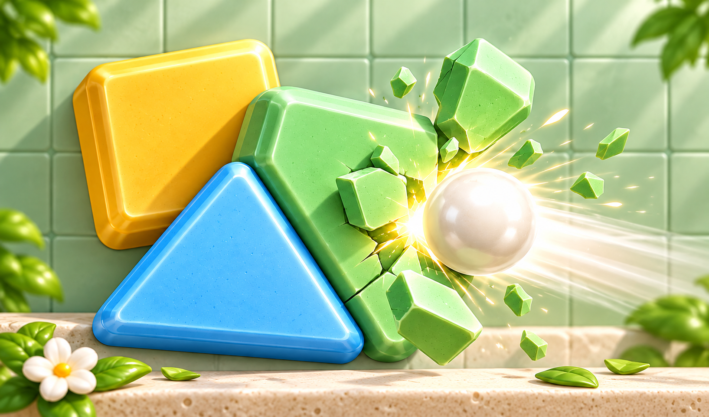

Brick Salvo
Aim a volley of balls and use ricochets to break the bricks.

About the game
Brick Salvo is a puzzle about volleys of balls and numbered bricks. The number on each brick shows its remaining strength, and every hit reduces it. Clear all the bricks in a level before any of them reaches the bottom boundary of the board.
Press on the board and move your finger to choose a direction. The aiming line shows a preview of the path. Release your finger to launch the volley. Balls bounce off walls and bricks, so the angle of a shot determines which parts of the board they can reach.
Once the volley ends, the bricks move down and scheduled new rows can enter the board. Collect +1 items to add balls to later volleys. Consider both the numbers on the bricks and how close they are to the bottom when planning your next shot. Keep using direct hits and ricochets until every brick in the level has been broken.
How to play
- 1.
- Press on the board and move your finger to adjust the aiming line.
- 2.
- Release your finger to launch a volley of balls.
- 3.
- Use bounces off walls and bricks.
- Each hit lowers the number on a brick.
- 4.
- Collect +1 items and break every brick before any reaches the bottom boundary.